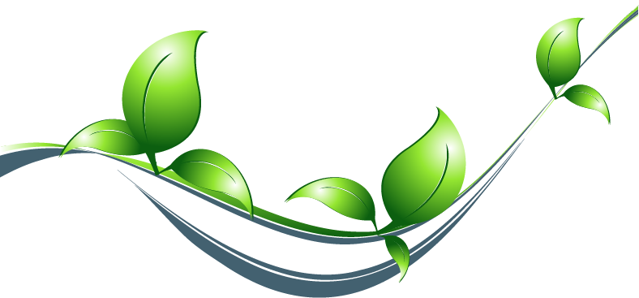

Тренд на экологичность: что делают бренды, чтобы адаптироваться к новой экореальности:
Запрос на экологичность в современном мире перестал быть узконишевым трендом и вышел на новый уровень. Общество все чаще выбирает концепцию осознанного потребления и заботу об окружающей среде.Мы наблюдаем, как фокус на экологичность, который появился еще несколько лет назад, сегодня становится полноценным трендом. Осознанное потребление вышло за рамки модного течения для избранных. Экопотребление стало активно обсуждаться на уровне бизнес-сообщества.Наиболее актуальна проблема экологичности для фармсектора и транспорта. Именно на их примерах отчетливо видно, как важна экоповестка и к чему может привести ее игнорирование.
Многие потребители до сих пор не знают, что просроченные или просто ненужные лекарства нельзя выбрасывать вместе с остальным мусором в урну или сливать в канализацию. Рано или поздно неразложившиеся формы и элементы препаратов оказываются в почве, грунтовых водах, открытых водоемах и питьевой воде. В Балашихе по состоянию на начало 2022 года не создано единой системы по приему и переработке просроченных или ненужных лекарств.
Со своей стороны государство может ввести дополнительные меры по развитию автомобильного электротранспорта в Московскую область. К примеру: нулевой транспортный налог; выгодные программы кредитования и лизинга; отмену налога с продаж; бесплатное использование платных магистралей и зон парковки для электромобилей. Необходимо более активное строительство зарядной инфраструктуры, как в городах, так и вдоль основных трасс, а также развитие более совершенных технологий. Это увеличение емкости аккумуляторов для дальних поездок и беспроблемного использования при низких температурах зимой.
